Depois de criar pelo menos uma conexão, o usuário pode entrar no Workspace, seja clicando na guia Workspace ou clicando na ação Select Connection na grade de conexões.
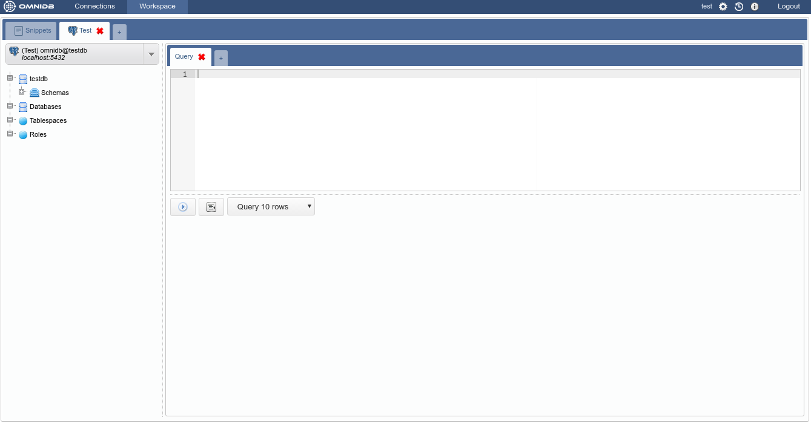
Esta interface possui vários elementos:
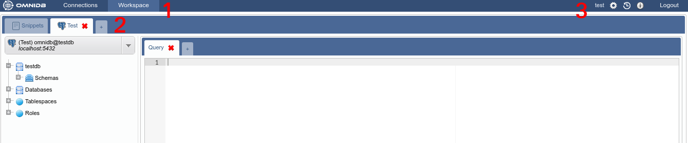
Então, a aba externa chamada Test tem esse nome por causa do alias que colocamos na conexão ao testdb. Esta aba é uma aba de conexão externa. Observe a pequena aba com uma cruz além da aba Test. Ela permite que você crie uma nova aba externa que será automaticamente uma aba externa de conexão. No entanto, a aba externa Snippet é fixa e sempre será a primeira. Uma nova aba externa de conexão sempre apontará automaticamente para a primeira conexão em sua lista de conexões de banco de dados. Ou, se você clicar no Selection Connection, ela apontará para a conexão selecionada. Observe os elementos dentro desta guia:
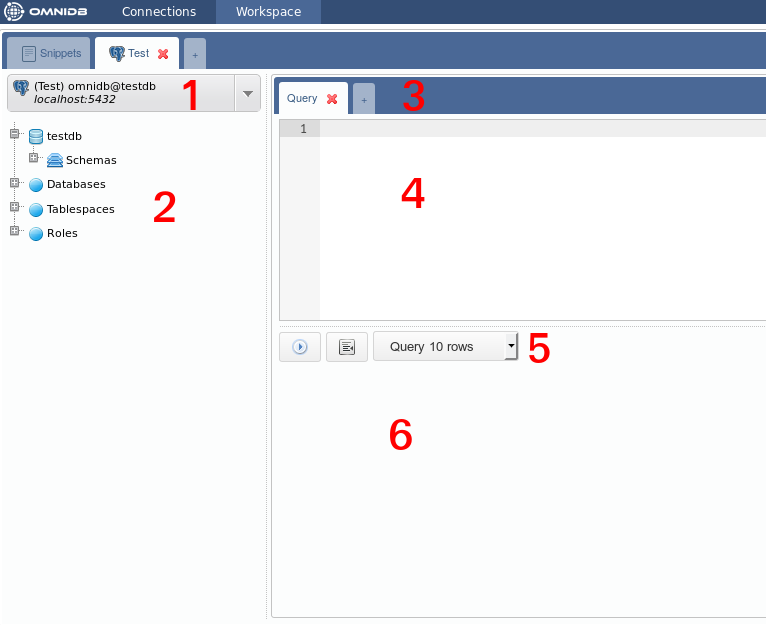
Alt-Q), mostrará uma grade com os resultados da consulta. Todos os modos mostrarão mensagens de erro, se houver.Dê uma olhada em seu seletor de conexões. OmniDB sempre aponta para a primeira conexão disponível, mas você pode alterá-lo clicando no seletor.
Selecione a conexão DellStore. Agora vá para a árvore logo abaixo do seletor e clique para expandir o nó Schemas.
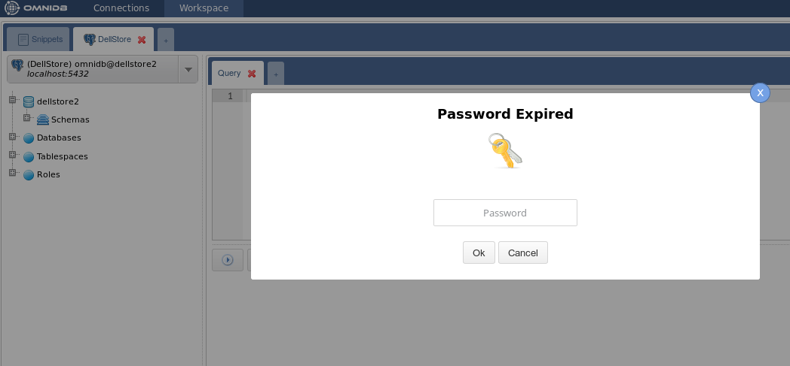
Tenha em mente que a cada 10 minutos sem executar ações no banco de dados, irá ativar um pop-up Password Expired. Como explicado anteriormente, isso é importante para a segurança do seu banco de dados. Depois de digitar a senha correta, você verá todos os schemas no seu banco de dados (no caso do PostgreSQL, TOAST e temp schemas não são mostrados).

Agora, clique para expandir o schema public. Você verá diferentes tipos de elementos contidos neste schema.
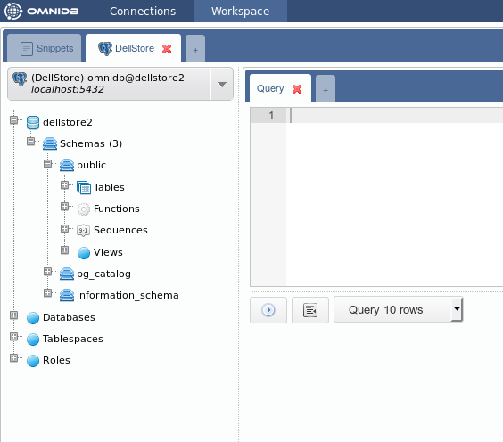
Agora clique para expandir o nó Tables, e você verá todas as tabelas contidas no schema public. Expanda qualquer tabela e você verá suas colunas, chave primária, chaves estrangeiras, restrições e índices únicos. Cada coluna é também expansível, apresentando tipo de dados e restrição anulável.
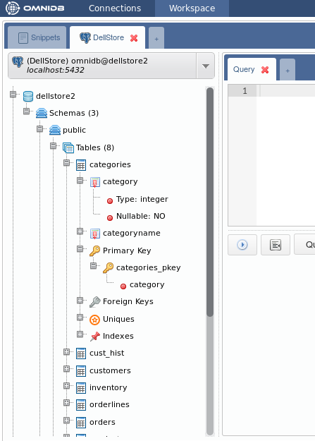
Para ver registros dentro de uma tabela, clique com o botão direito e escolha Data Actions > Query Data.
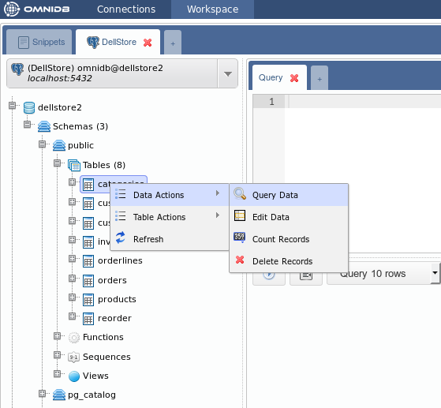
Observe que o OmniDB preenche o editor atual do SQL com uma consulta simples para listar os registros da tabela. Os registros são exibidos em uma grade logo abaixo do editor. Esta grade pode ser controlada com o teclado como se estivesse usando uma planilha. Você também pode copiar dados de células únicas ou blocos de células (que pode ser selecionado com o teclado ou mouse) e colar em qualquer planilha.
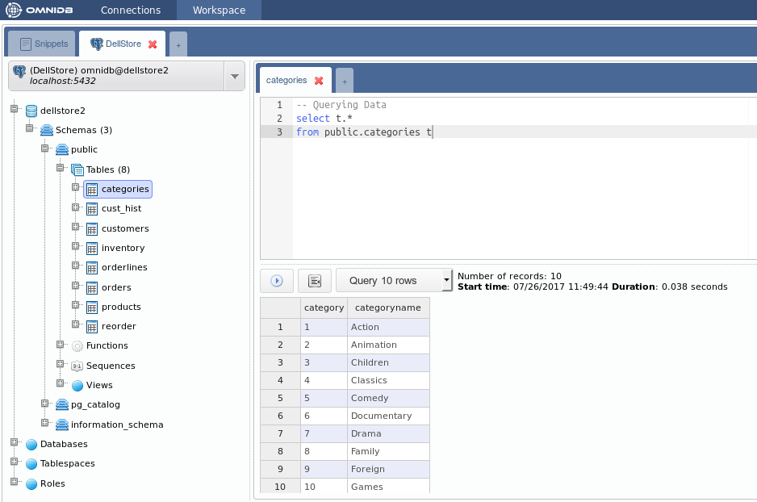
Você pode editar a consulta no editor do SQL, escrevendo simples ou complexas consultas e executá-las clicando no botão action. Você pode controlar quantos registros devem ser exibidos (10, 100, 1000 ou todas as linhas). Mais detalhes nos próximos capítulos.
Dentro de uma única conexão, você pode criar várias abas internas clicando na última aba com uma cruz. Cada nova aba interna será uma aba de consulta.
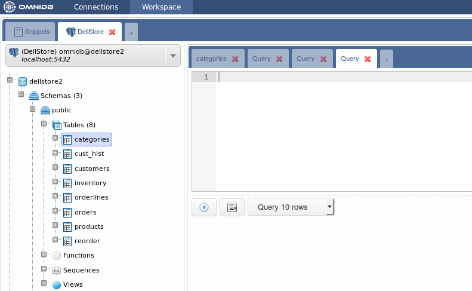
No OmniDB, você pode executar várias instruções SQL e procedimentos em paralelo. Quando está sendo executado, um ícone será mostrado na aba para indicar o estado atual. Se algum processo estiver concluído e não estiver na aba atual, essa aba mostrará um ícone verde para indicar que a rotina que está sendo executada agora terminou.
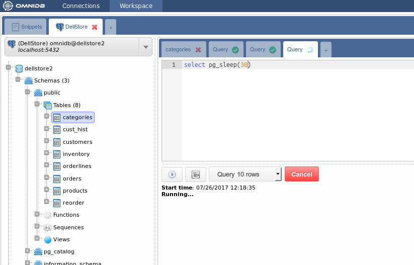
Ao clicar no botão Cancel, você pode cancelar um processo que está sendo executado dentro do banco de dados.

Você também pode arrastar e soltar uma guia para alterar sua ordem. Isso funciona com as abas internas e externas.
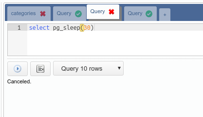
Além disso, você pode usar atalhos de teclado para gerenciar abas internas (Consulta SQL) e abas externas (Conexão): - Ctrl-Insert: Insere uma nova aba interna - Ctrl-Delete: remove uma aba interna - Ctrl- <: Muda o foco para a aba interna à esquerda - Ctrl- >: Muda o foco para a aba interna à direita - Ctrl-Shift-Insert: Insere uma nova aba externa - Ctrl-Shift-Delete: remove uma aba externa - Ctrl-Shift- <: Muda o foco para a aba externa à esquerda - Ctrl-Shift- >: Muda o foco para a aba externa à direita